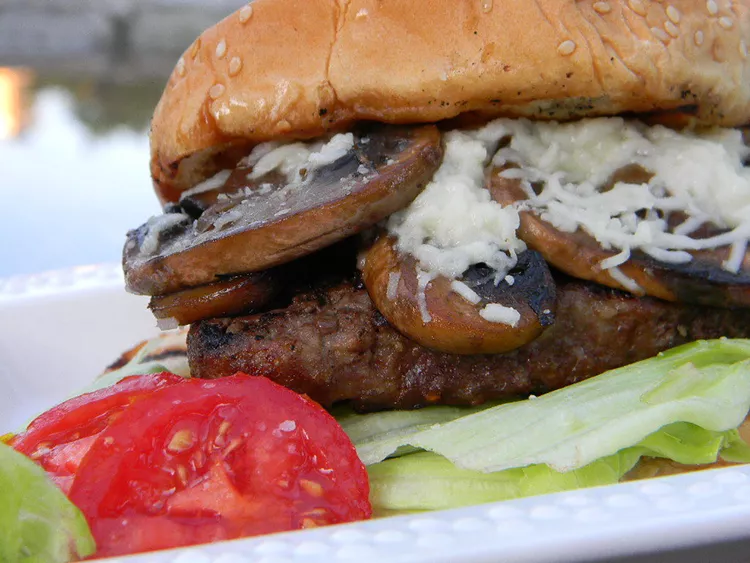

Grilled Mushroom Swiss Burgers

Description
This beefy mushroom Swiss burger recipe is too good not to try! It's a great way to spice up an ordinary hamburger. Not only can this be done on the grill, but you can also pan-fry the burgers if preferred.
Ingredients
- 1 ½ pounds lean ground beef
- ½ teaspoon seasoned meat tenderizer
- salt and pepper to taste
- 2 teaspoons butter
- 2 (4 ounce) cans sliced mushrooms, drained
- 2 tablespoons soy sauce
- 4 slices Swiss cheese
- 6 hamburger buns
Steps
- Preheat an outdoor grill for medium heat and lightly oil the grate.
- Divide ground beef into 6 equal-sized patties; season with meat tenderizer, salt, and pepper. Set aside.
- Melt butter in a skillet over medium heat. Add mushrooms and soy sauce; cook and stir until browned. Set aside and keep warm.
- Grill patties on the preheated grill until cooked through, about 6 minutes per side. An instant-read thermometer inserted into the center should read at least 160 degrees F (70 degrees C).
- Spoon mushroom mixture evenly on top of patties on the grill; top each one with a slice of Swiss cheese. Cover the grill until cheese melts, about 1 minute. Remove patties from the grill and serve on hamburger buns.